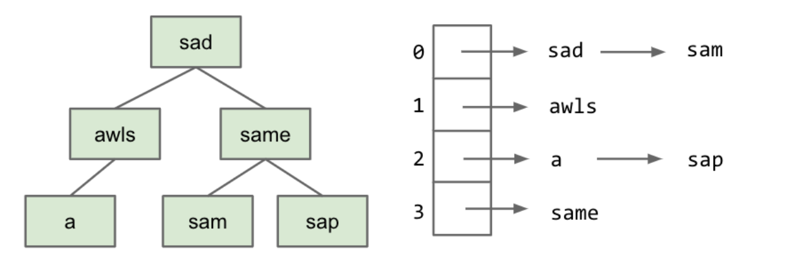
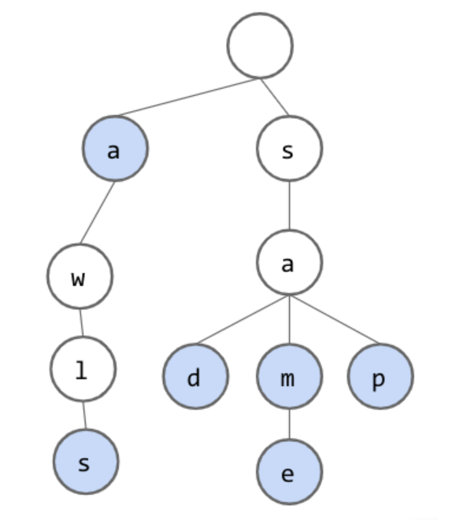

Tries
Introduction to Tries
引入
我们就前面所学的已经知道对于BST和Resizing Separate Chaining Hash Table有如下操作复杂度
- Balanced Search Tree:
contains(x): )Θ(logN)add(x): Θ(logN)
- Resizing Separate Chaining Hash Table:
contains(x): Θ(1) (assuming even spread)add(x): Θ(1) (assuming even spread and amortized)
对于哈希表，可以说运行速度已经很快了，那我们如何让他更快呢。已知在这种哈希表中我们自己写了代码把key转化为了一种对应的index，这个index上面也许有很多key用一个linked list连接起来，显然的
如果我们能够让转化这部分省略，也就是说直接把一个key对应到数组的某个位置上，就可以节约一部分运行时间
现在让我们假设这个key是一个char类型，我们希望通过数组实现索引key
1 | public class DataIndexedCharMap<V> { |
注意这里的index是字母而非数字，为什么可以用char索引呢？这是因为每个char对应着一个独有的数字，但是不是每个数字都对应一个char，这是显然的，因为数有无限个，字符只有那么多
Inventing the Trie
Trie适用于key可以被分解为许多char的情况，比如字符串可以分解为很多char，还有就是key的前缀有相同的，也称之为可共享，马上我们可以从结构上直观的认识。
下图是用之前说的BST和hash table来存储

现在我们再来看一下用Trie来存储字符串

蓝色的代表一个key，蓝色前面的成为prefix，prefix加key就成了一个String，是不是很直观
可以看到有两个特点
- 每个节点只存储一个字符
- 节点是共享的，也就意味着可以节约空间
接下来我们需要考虑的就是怎么去搜索遍历，显然，如果我们想要找的key对应的最后节点不存在或者为白色，则这个Trie中就没有我们想要找的key。
Summary
- 首先要区分ADTs和specific implementation，举个例子，Disjoint Set是一种ADT，但是Trie是一种特定实现
- Trie是Map和Set的特定实现，专门用于字符串
- Trie读作
try或者tree都行哦
Implementation and Performance
Implementation
ok，对于一个Trie，我们需要
- 节点，且每个节点要能连到下一个节点
- 一个节点可以连到多个节点，char一共128个，
- 节点可以储存一个key
- 节点可以表示为蓝色
所以有
1 | public class TrieSet { |
这样写的话缺点很明显，太浪费空间了，每个数组都是128的
Performance
下面来看下用Trie实现的Map表现如何
add: Θ(1)contains: Θ(1)
可以发现，这个Trie中有多少成员其实与我们进行上述两个操作无关，因为我们无需遍历整个Trie，也即与key的个数无关。但是与key的长度是有关系的所以可以这样测量
add: Θ(L)contains: O(L) 注意这里是O
Child Tracking
上面说了刚才那种写法的缺点是浪费空间，我们不由自主的想起来之前学hash table的时候为了节约空间的写法，把很多个成员放在数组的一个格子里的链表中，当链表成员过多的时候又对数组进行resize。
除了用hash table优化，也可以用BST，在需要更多child的时候增加pointer，但是BST的缺陷依旧在
Trie String Operation
Prefix Matching
Trie的一大特点就是可以进行高效的前缀匹配，操作就是沿着节点往下走一一匹配。这样我们可以轻松进行longestPrefixOf和keyWithPrefix，假设我们想获得所有key，下面是伪代码
1 | collect(): |
或者获得整个字符串
1 | keysWithPrefix(String s): |
这个功能应用很广泛，比如搜索引擎上或者是IDE的自动补全和输入法里面都能用到